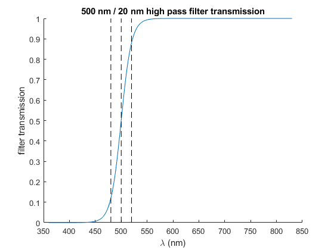

MakeSpectrum
Navigate to: Home | Alphabetic list | Grouped list | Source code: MakeSpectrum.m
creates a spectrum struct out of fields lam and val, with sanity checks
Contents
Syntax
rv = MakeSpectrum(lam, val, varargin)
Input Arguments
- lam: vector of double. The wavelength array, should be strictly positive and strictly ascending, with length > 1 (no single line spectra in this library)
- val: vector of double, of same length as lam. The values of the spectrum
- varargin: Name-Value pairs, which get added to the spectrum struct as additional fields.
Output Arguments
- rv: a struct with fields lam, val (both column vectors of same length), and any additional fields defined by the name-value pairs in varargin.
Algorithm
Creates the struct, and calls SpectrumSanityCheck to make sure all requirements are met and that lam and val are column vectors.
See also
MakeSpectrumDirect, SpectrumSanityCheck
Usage Example
function ExampleMakeSpectrum() lam = 360:830; cutoff = 500; width = 20; val = 0.5 * (1 + tanh((lam - cutoff) / width)); s = MakeSpectrum(lam, val, 'name', 'HighPass_500_200',... 'description','high pass filter curve around 500 nm with width 20 nm',... 'created', datetime('now')) figure(); clf; hold on; plot(s.lam, s.val); plot([cutoff - width, cutoff - width],[0 1],'k--'); plot([cutoff, cutoff],[0 1],'k--'); plot([cutoff + width, cutoff + width],[0 1],'k--'); xlabel('\lambda (nm)'); ylabel('filter transmission'); title('500 nm / 20 nm high pass filter transmission'); end
s =
struct with fields:
lam: [471×1 double]
val: [471×1 double]
name: 'HighPass_500_200'
description: 'high pass filter curve around 500 nm with width 20 nm'
created: 12-Feb-2022 11:59:35
